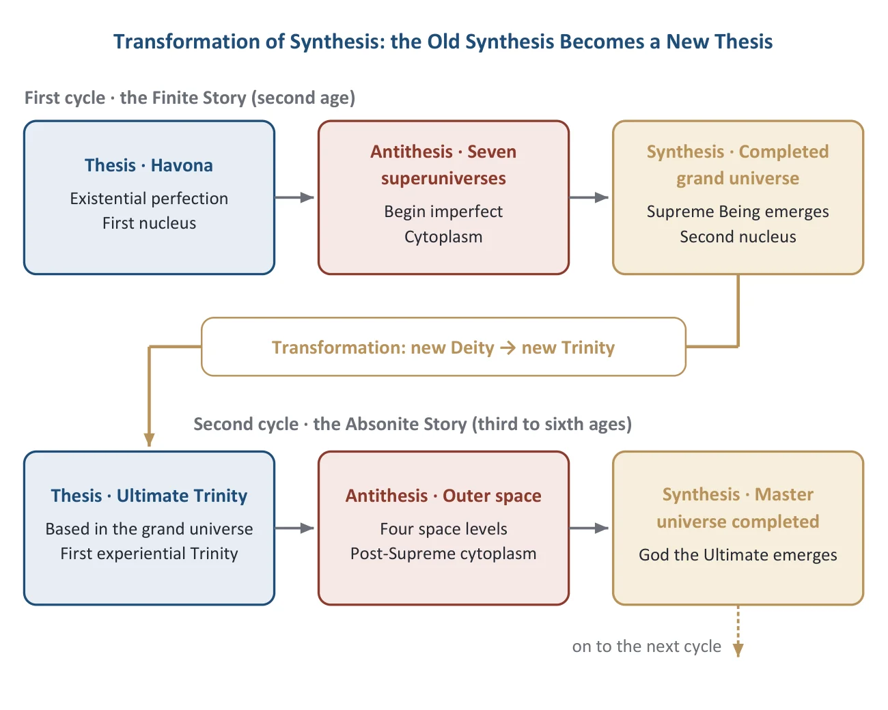

Original : L’Histoire absonite, chapitre V, « La transformation de la synthèse » (pp. 62–65)
Dans ce bref chapitre, Sadler entrelace le cycle de la thèse, de l’antithèse et de la synthèse avec la distinction entre noyau et cytoplasme. Havona, les superunivers et le grand univers achevé composent le premier cycle, mais une synthèse qui a atteint sa destinée ne reste pas en repos ; elle se change en une nouvelle thèse. L’émergence d’une nouvelle Déité personnalise l’ancienne synthèse, et la formation d’une nouvelle Trinité présente la nouvelle thèse. Sadler propose cette « transformation de la synthèse » comme un principe fondamental qui traverse toute la croissance du maitre univers, et sur cette base il anticipe le deuxième cycle.
Superposer le schéma thèse-antithèse-synthèse du prologue au schéma noyau-cytoplasme du chapitre précédent donne au premier cycle une nouvelle lecture. Havona a commencé comme une existence antérieure à la création et est devenu plus tard la thèse de la perfection divine. Sadler demande : quand Havona est-il devenu un noyau ? À quel moment a-t-il cessé d’être une création qui existait en elle-même et pour elle-même ? À quel moment s’est-il changé en défi ?
Sa réponse est : lorsque l’union de Déité de Dieu le Septuple est venue à l’existence, c’est-à-dire lorsque cette union a commencé à fonctionner pendant que les superunivers s’organisaient. Un noyau ne peut être noyau par lui-même ; il lui faut un cytoplasme environnant. De même, un défi exige une partie mise au défi. Pour que Dieu le Septuple agisse comme le défi de la perfection divine, il fallait que quelque chose soit présent pour recevoir ce défi.
L’imperfection native des superunivers est l’antithèse de Havona parfait, et les sept superunivers sont le cytoplasme de Havona comme noyau. Leur imperfection devient un contre-défi, le défi du besoin. Il rencontre Dieu le Septuple et toutes les personnalités du système Paradis-Havona qui sont descendues dans les univers de l’espace-temps pour aider des créatures imparfaites à s’élever jusqu’aux hauteurs de la perfection évolutionnaire.
Dans une parenthèse, Sadler ajoute une remarque brève et bienveillante. De même que la perfection de Dieu est pour chacun de nous un défi à nous élever, de même notre imperfection est un défi de service pour des êtres divinement parfaits. Le défi ne va pas dans un seul sens.
Le grand univers achevé est une synthèse du parfait et du rendu parfait. Sadler trouve cette synthèse démontrée sur trois niveaux. Au niveau des créatures, elle apparait lorsqu’un être humain fusionne avec l’Ajusteur qui l’habite et trouve Dieu au Paradis. Au niveau des créateurs, elle apparait lorsque Dieu revêt la nature humaine, comme le font les Fils du Paradis dans leurs effusions. Au niveau de la Déité, elle apparait dans l’émergence finale de l’Être Suprême par la synthèse pouvoir-personnalité de toute la réalité finie.
L’homme monte, Dieu descend, et la somme de leur rencontre est personnalisée en une seule Déité. Tel est le premier cycle, le sujet de l’Histoire finie.
Lorsque la thèse et l’antithèse parviennent à la synthèse, des choses d’abord si différentes, et qui se mettaient mutuellement au défi, sont unies en une seule. C’est l’accomplissement de la destinée, ou du moins de la destinée implicite dans les défis originels de la thèse à l’antithèse et de l’antithèse à la thèse.
Pourtant, selon Sadler, l’accomplissement de la destinée met toujours en mouvement quelque chose de nouveau. Si le seul résultat de l’ancrage des superunivers dans la lumière et la vie et de l’achèvement du grand univers était l’émergence de l’Être Suprême, alors, à la fin de l’âge présent, le grand univers pourrait entrer dans un état statique où il ne croitrait plus. Mais l’apparition du Suprême déclenche d’autres évènements. Comme résultat direct de Sa pleine croissance, la première Trinité expérientielle prend forme comme réalité effective. Le Livre d’Urantia rend cette séquence évidente.
mais l’apparition du Tout-Puissant Suprême à la fin du présent âge de l’univers signifiera que le fini évolutionnaire est parvenu au premier stade de la destinée expérientielle. Cet évènement conduira certainement au fonctionnement parachevé de la première Trinité expérientielle —l’union des Créateurs Suprêmes, de l’Être Suprême et des Architectes du Maitre Univers.106:3.2
Sadler pose ici la proposition centrale du chapitre. L’achèvement de l’Être Suprême exprime et parachève l’achèvement de la première synthèse, et la première Trinité expérientielle, une fois formée, est l’évènement qui change cette première synthèse en deuxième thèse. Si le Suprême achevé correspond à la « destinée atteinte », la venue à l’existence de la nouvelle Trinité expérientielle, la Trinité Ultime, correspond au « nouveau défi » lancé par une nouvelle thèse. Ce nouveau défi place devant elle une destinée plus vaste et plus haute.
Sadler élève ensuite cela au rang de principe général : l’ancienne synthèse devient la nouvelle thèse ; l’ancienne synthèse est personnalisée par l’apparition d’une nouvelle Déité, et la nouvelle thèse est présentée par la formation d’une nouvelle Trinité. Il estime que cette « transformation de la synthèse » est un principe fondamental qui traverse toute l’histoire de la croissance du maitre univers.
Une montagne offre une comparaison. Le moment où l’on se tient sur le premier sommet est un achèvement, et pourtant ce n’est que de là qu’un sommet plus élevé apparait. Parce que la première Trinité expérientielle a pour champ tout le maitre univers, et non le seul grand univers, elle est une thèse véritablement nouvelle : la deuxième thèse.
Que la Trinité Ultime entre en pleine fonction après l’achèvement de l’Être Suprême, et que son but soit l’intégration de la création du maitre univers, c’est ce que le texte lui-même déclare [106:3.2, 106:4.2]. Rassembler cela dans le principe selon lequel « la synthèse se transforme en thèse » et le traiter comme une loi répétée à chaque âge de l’univers est l’interprétation de Sadler ; le texte ne donne aucun nom à ce principe. Ce que l’on peut confirmer à partir du texte, c’est l’observation que le couple « apparition d’une Déité, suivie de la formation d’une Trinité » se produit à la fois au premier âge (l’Esprit Infini, puis la Trinité du Paradis) et au troisième âge à venir (l’Être Suprême, puis la Trinité Ultime).
Muni du principe selon lequel la synthèse devient une nouvelle thèse, Sadler anticipe ce qui suivra une fois que la deuxième thèse apparaitra sur la scène spatiale du maitre univers. Le grand univers doit d’abord être réévalué. En tant que première synthèse, il a atteint sa destinée ; en tant que nouveau noyau, il se tient au seuil d’une destinée plus vaste et plus nouvelle. En tant que second univers nucléaire, le grand univers devient la base de pouvoir de la deuxième thèse, la première Trinité expérientielle, dans son extension vers l’extérieur. À partir de cette base nucléaire, la Trinité et les innombrables personnalités qu’elle mobilisera se fraieront un chemin vers l’extérieur, dans les créations cytoplasmiques des quatre niveaux de l’espace extérieur.
La deuxième antithèse doit appartenir au domaine des niveaux de l’espace extérieur. Les univers extérieurs différeront du grand univers autant que les superunivers différaient de Havona. Étant de nature post-suprême, ils sont entièrement incapables d’expérience finie.
Si ce raisonnement sur la deuxième thèse et la deuxième antithèse est correct, leur défi mutuel doit logiquement aboutir enfin à une deuxième synthèse : l’union des univers extérieurs comme cytoplasme avec les créations intérieures comme noyau. Mais une telle synthèse n’est possible que lorsque tout le maitre univers a grandi et achevé son développement final. Sadler promet de montrer dans des chapitres ultérieurs quelle immense entreprise c’est là. Le Livre d’Urantia prévoit le résultat de cet achèvement en ces termes.
L’extériorisation totale de l’Ultime implique le parachèvement de la création du maitre univers, et comporte la pleine émergence de cette Déité transcendantale.106:4.2

Vu d’une grande hauteur, le maitre univers semble se développer assez rapidement. Après le premier cycle viennent la deuxième thèse et la deuxième antithèse, et celles-ci ouvriront une deuxième grande aventure dans l’espace extérieur, actuellement inhabité. À la suite de l’« Aventure Suprême » du deuxième âge, Sadler appelle celle-ci l’« Aventure Ultime ».